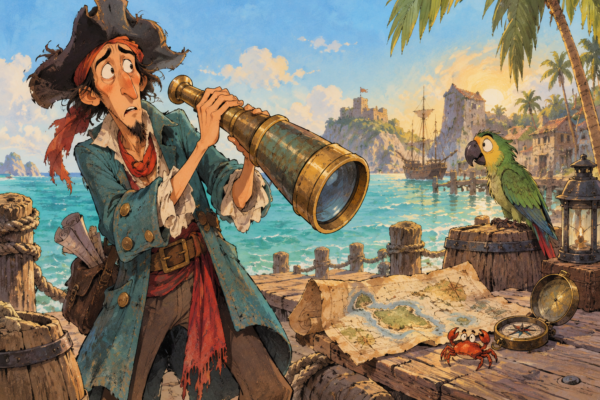

01 · inventory-tray
STYLE SPECIMEN · The Curse of Monkey Island (1997)
The Gullscream Gazette
Expressive, hand-painted, mischievous, and readable. These are editable primitives, not a finished screen.

02 · item-interaction
Context action
Context action
Selected item plus target and verb, with an explicit result line for success or failure.
FICTIONAL SAMPLE · COST SHOWN BEFORE CONFIRM03 · dialogue-scene
Speech response
Speech response
A short dialogue line and two differently voiced response fragments with speaker clarity.
Specimen only; nothing has been committed.